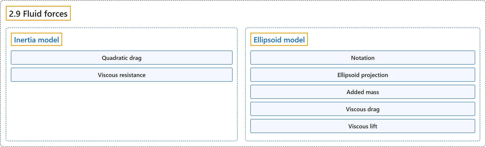

2.9 Fluid forces
Classification

Glossary
| Term | Definition | 中文翻译 | Source |
|---|---|---|---|
| 2.9 Fluid forces 流体力 |
(context) "Nevertheless we provide two phenomenological models which are sufficient for simulating behaviors such as flying and swimming." | （语境）不过我们提供了两种唯象模型，足以模拟飞行和游泳等行为。 | Google DeepMind, n.d., "Fluid forces", para. 1 |
| Inertia model 惯量模型 |
"In this model the shape of each body, for fluid dynamics purposes, is assumed to be the equivalent inertia box, which can also be visualized." | 在这个模型中，出于流体动力学的目的，每个刚体的形状被假定为等效惯量盒，它也可以被可视化。 | Google DeepMind, n.d., "Inertia model", para. 1 |
| Quadratic drag 二次阻力 |
"scale quadratically with the velocity of the body, and are a valid approximation of the fluid forces at high Reynolds numbers" | 随刚体速度呈二次方变化，是高雷诺数下流体力的有效近似 | Google DeepMind, n.d., "Inertia model", para. 3 |
| Viscous resistance 黏性阻力 |
"scale linearly with the body velocity, and approximate the fluid forces at low Reynolds numbers" | 随刚体速度呈线性变化，近似低雷诺数下的流体力 | Google DeepMind, n.d., "Inertia model", para. 4 |
| Ellipsoid model 椭球模型 |
"In this section we describe and derive a stateless model of the forces exerted onto a moving rigid body by the surrounding fluid, based on an ellipsoidal approximation of geom shape." | 本节介绍并推导一个无状态模型，描述周围流体作用在运动刚体上的力，它基于对 geom 形状的椭球近似。 | Google DeepMind, n.d., "Ellipsoid model", para. 2 |
| Notation 记号 |
(context) "The problem is described in a reference frame aligned with the sides of the ellipsoid and moving with it." | （语境）问题在一个与椭球各边对齐并随其运动的参考坐标系中描述。 | Google DeepMind, n.d., "Notation", para. 1 |
| Reynolds number 雷诺数 |
"The Reynolds number is the ratio between inertial and viscous forces within a flow" | 雷诺数是流动中惯性力与黏性力之比 | Google DeepMind, n.d., "Notation", para. 2 |
| Circulation 环量 |
"to denote circulation, which is the line integral of the velocity field around a closed curve" | 表示环量，它是速度场沿一条闭合曲线的线积分 | Google DeepMind, n.d., "Notation", para. 3 |
| Vorticity 涡量 |
"For a rigid-body motion, the vorticity is twice the angular velocity." | 对于刚体运动，涡量是角速度的两倍。 | Google DeepMind, n.d., "Notation", para. 3 |
| Ellipsoid projection 椭球投影 |
"the area projected by the ellipsoid onto the plane normal to" | 椭球在法向平面上的投影面积 | Google DeepMind, n.d., "Ellipsoid projection", lemma |
| Added mass 附加质量 |
"For a body moving in a fluid, added mass or virtual mass measures the inertia of the fluid that is moved due to the body’s motion." | 对于在流体中运动的物体，附加质量或虚拟质量度量因物体运动而被带动的流体的惯性。 | Google DeepMind, n.d., "Added mass", para. 1 |
| Viscous drag 黏性拖曳 |
"The drag force acts to oppose the motion of the body relative to the surrounding flow." | 拖曳力阻碍物体相对于周围流体的运动。 | Google DeepMind, n.d., "Viscous drag", para. 1 |
| Viscous resistance 黏性阻力 |
"Finally the viscous resistance terms, also known as linear drag, well approvimate the fluid forces for Reynolds numbers around or below" | 最后，黏性阻力项（也称线性阻力）能很好地近似雷诺数在某量级附近或以下时的流体力 | Google DeepMind, n.d., "Viscous drag", para. 7 |
| Viscous lift 黏性升力 |
(context) "In the next subsections we define two sources of circulation and the resulting lift forces." | （语境）在接下来的小节中，我们定义两种环量来源以及由此产生的升力。 | Google DeepMind, n.d., "Viscous lift", para. 1 |
| Kutta-Joukowski theorem 库塔-茹科夫斯基定理 |
"The Kutta-Joukowski theorem calculates the lift" | 库塔-茹科夫斯基定理计算升力 | Google DeepMind, n.d., "Viscous lift", para. 1 |
| Magnus force 马格努斯力 |
"The Magnus effect describes the motion of a rotating object moving through a fluid." | 马格努斯效应描述在流体中运动的旋转物体的运动。 | Google DeepMind, n.d., "Magnus force", para. 2 |
| Stagnation point 驻点 |
"A stagnation point is a location in the flow field where the velocity is zero." | 驻点是流场中速度为零的位置。 | Google DeepMind, n.d., "Kutta condition", para. 1 |
| Kutta condition 库塔条件 |
"A moving body with a sharp trailing (rear) edge will generate in the surrounding flow a circulation of sufficient strength to hold the rear stagnation point at the trailing edge. This is the Kutta condition, a fluid dynamic phenomenon that can be observed for solid bodies with sharp corners, such as slender bodies or the trailing edges of airfoils." | 带有尖锐后缘的运动物体会在周围流体中产生足够强的环量，使后驻点保持在后缘处。这就是库塔条件，一种可以在有尖角的固体上观察到的流体动力学现象，例如细长物体或翼型的后缘。 | Google DeepMind, n.d., "Kutta condition", para. 1 |
References
Google DeepMind. (n.d.). Fluid forces. MuJoCo Documentation (Version 3.17.0). Retrieved October 31, 2026, from https://mujoco.readthedocs.io/en/stable/computation/fluid.html